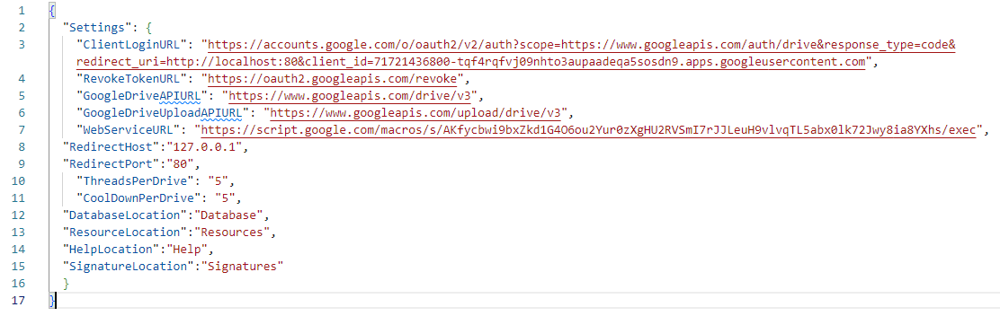
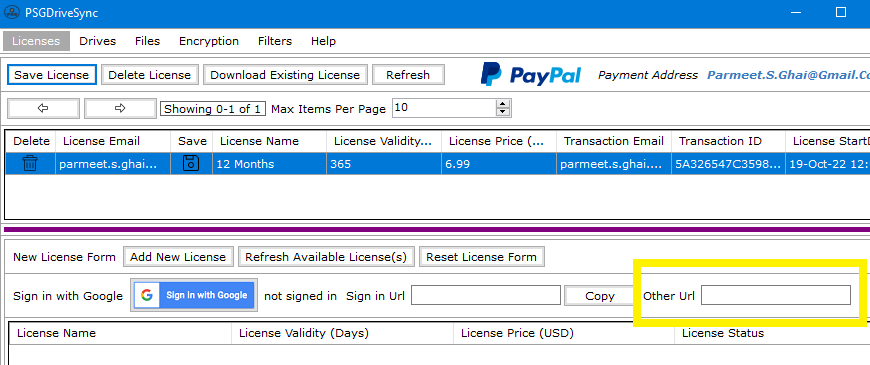

|


|
All application settings are saved in "Settings.json" file which resides in the same directory as the application. if this file goes
missing then the application will not load. Listed below is a description of each one of those settings mentioned in "Settings.json" file.
ClientLoginURL - This is the sign in URL that the application opens up in user's default web browser to allow users to sign in into their
google account when they are either installing a new license or downloading an existing license. Please do not use the URL by itself as the
URL is incomplete and insecure.
Different Components of this URL are:
- Scope : https://www.googleapis.com/auth/drive
- Response Type: Code
- Redirect URI: http://localhost:80
- Client ID: 71721436800-tqf4rqfvj09nhto3aupaadeqa5sosdn9.apps.googleusercontent.com
The Client ID: 71721436800-tqf4rqfvj09nhto3aupaadeqa5sosdn9.apps.googleusercontent.com is a unique Identifier that has been assigned to
PSGDriveSync application by Google. All your sign in requests from PSGDriveSync application will always contain this Identifier. If they do not
then please do not sign in into your Google Drive account using that URL.
The Application generates two cryptographically secure random strings where one gets used as “state” and the second string gets used
as "e;code verifier"e; which in turn is used to generate the "e;code_challenge"e; using “code_challenge_method=S256” setting.
Each of them is 128 bytes in Length and gets appended to to the sign in URL mentioned above. After the application makes the URL secure, it
should look something like this:
https://accounts.google.com/o/oauth2/v2/auth?scope=https://www.googleapis.com/auth/drive&response_type=code&redirect_uri=http://localhost:80&client_id=71721436800-tqf4rqfvj09nhto3aupaadeqa5sosdn9.apps.googleusercontent.com&state=XXXXX&code_challenge=XXXXXXX&code_challenge_method=S256
Addition of "state", "code_challenge" and "code_challenge_method" is what makes the URL secure. That is the reason why you should only use
the URL that is generated by the application and not copy and paste this URL directly from the "Settings.json" your web browser.
The Application also has a built in feature that allows you verify the authenticity of a sign in URL and its present under the new license form
in the "Licenses" window. All you need to do is copy and paste the URL from your web browser into the box that says "Other Url" and the application
will let you know if the URL is safe to use or not.
You can find more information on all these different parameters which are part of the URL on Google's Website
RevokeTokenURL - This is the URL that the application uses to Revoke your google access token and refresh token when you choose to delete your
license. Doing so prevents any possible unauthorized access to your google drive account
GoogleDriveAPIURL - This URL is used by the application to perform real-time file operations and sync operations on your google drive account.
GoogleDriveUploadAPIURL - This URL is used by the application to upload files to your google drive account.
WebServiceURL - This URL is used by the application to perform license operations like create, delete, verify and download. Its also used to
authorize and refresh your google drive access token on your behalf.
RedirectHost - This URL represents your computer on which the application is run and is used right after the sign in process completes
where the google servers return an authorization code to this URL which is then picked up by the application and sent to the WebService URL
for further processing.
RedirectPort - This is the port number that is used along with the RedirectHost URL mentioned above. If any other application is bound to this port
and is listening to this port then the sign in process will not work. You will need to close the other application that is bound to this port so
PSGDriveSync can bind to it instead.
ThreadsPerDrive - This number represents the number of simultaneous sync operations that are allowed on a drive. The higher the number, the more
concurrent file transfers will take place during sync operations however it will also lead to more CPU Usage.
CoolDownPerDrive - This is the number of seconds for which a drive pauses after it has completed all its sync operations so it may start all over
again with all those sync operations.
DatabaseLocation - This is the folder where the file "Database.db" is kept at. You may change this setting anytime however the actual
Database file "Database.db" is also needed to be moved to its new location as well otherwise the application will not work.
ResourceLocation - This is the folder where the file "Resources" is kept. Normally you do not have to change this setting.
HelpLocation - This is the folder where the help files are kept. Normally you do not have to change this setting.
SignatureLocation - This is the folder where all the signature files from different encrypted files are kept. Those files are then used
by the application to simultaneously verify both the integrity and authenticity of the data contained in those files before they are decrypted.
You may change this settings anytime however all the files contained in the original folder will be needed to be moved to the new folder otherwise
decrypting the encrypted files linked to those signature files will become problematic.
|